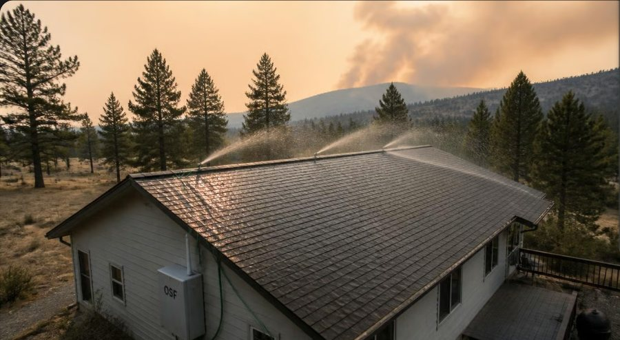
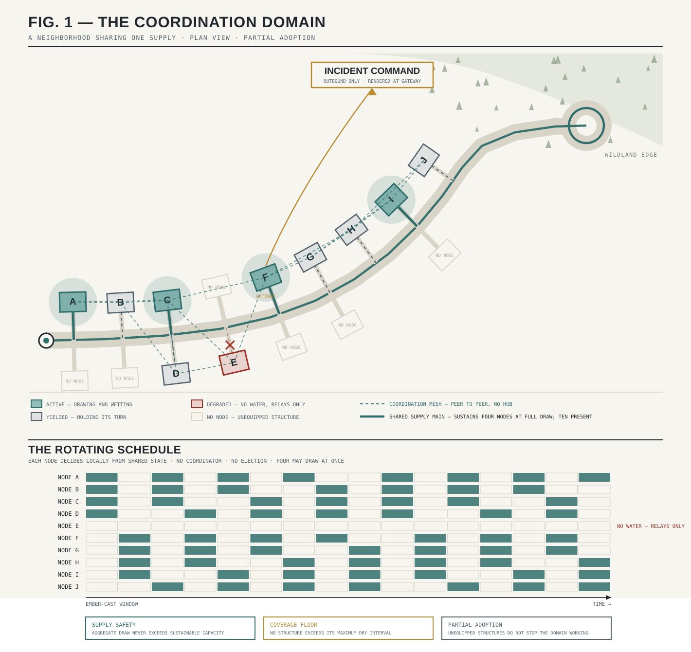

A treatise on a new interface firefighting technology that enables the incident commander with a strategic resource at the line of contact.
When a wildfire destroys a neighborhood, it is usually not the wall of flame that does it. It is embers — burning fragments carried on the wind, sometimes a mile or more ahead of the fire itself.
They land on roofs, in gutters, in the dry mulch beside a wall, and they start small fires that become house fires while the main fire is still far away. In a bad wind event, thousands of embers land across a neighborhood at once, and there are never enough firefighters to stand at every house.
There is a well-understood answer: keep the surfaces wet. A roof that stays damp through the ember window does not ignite. Sprinkler systems that wet roofs and perimeters during fire events have protected individual homes and cabins for years. The engineering is not exotic — water, pipes, and timing.
At ordinary suburban spacing, fire science has a blunt finding: once one house lights, the next house is the fuel. Your survival is partly a function of parcels you do not control. Three protected homes out of five is a firebreak. One is a wet spot.
If every house on a street turns its sprinklers on at full blast at the same time, the water system that supplies all of them collapses. Pressure drops, and nobody's sprinklers work.
A neighborhood that wants to defend itself has to share its water intelligently — houses taking turns, surfaces staying wet, the supply never exhausted. No product on the market does this. That is the gap this specification fills, and it is the whole invention.
Each node decides locally from shared state. The red mark is the point where the main gives out — aggregate draw never crosses it, and no house goes unprotected. A wet roof stays protective for many minutes between passes, so taking turns costs nothing that matters.

The heart of the system is a weatherproof enclosure about the size of a breaker panel, mounted on a wall. Inside: an industrial controller, a small mesh radio, a battery, and motorized water valves. A garden hose or pipe comes in one side; zones go out the other, feeding ordinary lawn sprinklers on the roof line and around the house.
One zone at a time, rotating on a schedule, so an ordinary household water connection can keep a whole house wet. It works with as little as one sprinkler from the hardware store. Two or three protect a mobile home or a cabin.
A license-free mesh radio in every box. The same taking-turns logic that runs inside one box runs across the whole street. No internet. No subscription. No account. The boxes talk directly to each other.
If a box is the only one on the street, or the radio network is down, it protects its own house on its own schedule. Coordination makes it better. Nothing makes it stop. Every failure has a defined destination and a way back.
Every unit speaks its status aloud in plain language, the way a fire alarm panel does. No manual, no app. A volunteer who has never seen one can put it into service in minutes, in the dark, in gloves.
A tamper-evident log of what it did and when — activations, water used, conditions. After a fire the neighborhood holds a verifiable record, useful for insurance, for investigators, and for making the system better.
Arriving crews get one unified picture of every participating home and can direct it. A homeowner always retains control of their own equipment. Automation manages resources; it never overrules people.
The Open Source Firefighter is not a smart home system, not a security camera, and not a surveillance network. Its radio carries only short, defined messages about fire defense — activations, water status, coordination. Video, audio, and personal data have no place in its language at all; the system is architecturally incapable of transmitting them.
A homeowner's data stays home. This is not a policy promise that could be revised later. It is built into how the system works, and the program's charter forbids changing it.
Identical firmware, identical coordination protocol, identical message categories. The classes differ in packaging, connectors, power sourcing, and environmental rating only. A government installation is not a smarter unit; it is the same unit in harder packaging.
The wall-mounted box. Built entirely from standard industrial parts — the same controllers, valves, and batteries used in water treatment plants and alarm panels, from ordinary suppliers. A capable homeowner, electrician, or irrigation contractor can build and install it.
The same unit in tougher packaging — sealed connectors, marine-grade fittings, higher-end radios where agencies need them, and integration with the mapping and command tools firefighters already use.
The same system in a rugged transit case with battery and solar, stored on a pallet and dropped where needed. It watches the pump by listening to it, schedules water so the fuel lasts the whole event, and reports back — so a crew does not drive two hours to find the pump quit six hours ago.
This is a family of documents, not a reading assignment. Each door below leads to a section written for one kind of reader. Where a section page is still in preparation, the documents that serve that reader are listed and available now.
What this gives you at the line of contact: the three deployment tiers, the combined operation, supply and coverage math, and the doctrine under a realistic fire. Written so a new lieutenant can read it once and employ it.
Starting at zero: why unlicensed spectrum, what LoRa trades away, why there is no hub, why Meshtastic, and where the substitution line sits. Then the layer model, the closed verb vocabulary, the state machine, and enough to start building.
How this integrates with construction that already exists: the codes it adopts by reference, the boundaries it deliberately stays outside, the trust layer and what it does and does not assert, and the system expressed as numbered installation requirements for plan check.
What a community actually decides, asks, and funds. What one street can do that one house cannot, and what it costs to find out.
The rules the box obeys, the buildable system, the terminal schedule, and a known-good configuration to start from. Everything is a commodity part by requirement, not by preference.
Deployment on instrumented range land, the terrain layer, and where the specification family goes next — the development path and how a shared-configuration community reproduces known-good deployments.
Every public document, as filed and as published. The complete filing is one file at the top; everything else is a section of it, split out for reading. Nothing here requires a license, an account, or permission.
This is not a product competing for a budget. It is a safety primitive, like the seatbelt or the smoke detector — something whose worth is categorical, whose mechanism is legible from first principles, and whose delay is paid in lives.
Safety primitives used to get a grace period: time to become culture before anyone worked out how to meter them. The smoke detector arrived before the subscription business model that would have eaten it. That grace period is gone. Invented today, the smoke detector would arrive as a platform, with a monthly fee, a proprietary battery, a cloud dependency, and an insurance partnership — and the enclosure would masquerade as the safety.
The coordination primitive for ember defense is being born right now, and whichever form entrenches first is what ember defense means for the next fifty years. The openness here is not idealism. It is a replacement for the historical luck that seatbelts got for free.
A provisional application was filed on October 10, 2026 and the complete disclosure was published. The filing exists to keep the coordination system permanently open, so that nobody can fence it off and sell it back as a subscription.
Every component must be available from multiple manufacturers through normal supply channels. Equipment depending on a single company for parts is, in the specification's own words, expressly non-compliant.
Anyone may propose improvements, judged in public against a short charter with two unbreakable rules: the system must never require an outside service to do its job, and automation must never overrule the person standing at the equipment. A box built in 2026 and one built in 2046 will still work together.